Avalanche Awards & Nominations

To be recognised by our peers is a great honour and is something I did not ever expect to happen. Check out some of the awards we have been nominated for over the past few years and cross your fingers that we may even a few more at some stage! We genuinely love designing websites & helping people realise their dreams and it is always nice to be recognised for our work. Please browse through our awards section for information on all the stuff Avalanche have been nominated for over the last few years.
The Kerryman Business Awards 2019

The Kerryman Business Awards are county wide awards recognising the entrepreneurialism, innovation, diversity and talent of businesses across all sectors. Avalanche are lucky enough to have been nominated for the Best Innovation in Business Award after a stellar 2019 that has seen us create more websites & apps than ever before. It is a great honour to be recognised for such an award by our fellow Kerry men and women. At Avalanche, we pride ourselves on working & creating employment from our headquarters in the beautiful Kingdom of Kerry and we endeavour to keep digital talent in Kerry where possible. You can read more about it here.
Irish Early Career Awards 2019

I am delighted to announce that I have been nominated for the Technology Professional of The Year at the 2019 Irish Early Career Awards which celebrate outstanding work across a wide range of sectors. We were nominated by a large number of clients, friends in the industry and people on our newsletters so thank you to everyone who took the time! You can read more about it here.
Irish Content Marketing Awards 2019
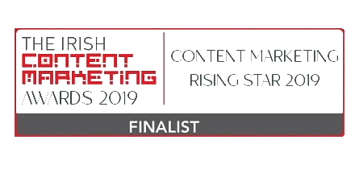
The Irish Content Marketing Awards recognise the endeavours of the Irish marketing scene and provide a platform where the best work, by the best people for the best clients are celebrated. The gala awards ceremony and dinner is annually attended by the cream of the marketing industry, offering a unique opportunity to network and celebrate with hundreds of senior executives. The Irish Content Marketing Awards recognise outstanding achievements in leveraging the content marketing discipline to drive business and organisational success. I am nominated for the Content Marketing Rising Star 2019 which is for those excelling beyond their tentative years. You can read more about it here.
The Micro Business Awards 2019
The Micro Business Awards celebrate the leaders of Ireland's small to medium business community. These unique awards appreciate the nation’s best sole traders, micro businesses and small to medium companies - as well as the services providers and advisers that both help and encourage them. Their mission is to honour and recognise Ireland’s small to medium businesses as well as those champions and advocates that support them. You can read more about it here.
The Early Career Awards 2018
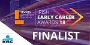
The Lincoln Recruitment Irish Early Career Awards celebrates excellence and recognises the achievements of young professionals in Ireland, and ultimately, rewards innovation, best practice and outstanding achievement across a broad range of sectors. The Awards event, hosted by Des Cahill, provides an important opportunity to recognise and showcase young professional stars as they progress on their career journey. Over sixty early career professionals have been shortlisted across sixteen categories and a total of six companies. We are delighted to say that CEO, Aidan O' Carroll has been nominated in the prestigious IT & Technology Professional of the year category. You can read more about it here.
The Blog Awards Ireland 2018
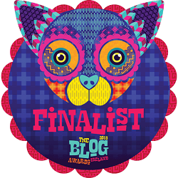
The Blog Awards Ireland 2018 finalists have been announced and after three rounds of judging we are proud to announce that our blog "Once more into the fray.." has been nominated for the best blog post. It is one of our most open blog posts and it garnered a huge reaction online. Please feel free to check it out if you have not done so already. You can read more about it here.
Irish Content Marketing Awards 2018
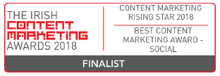
The Irish Content Marketing Awards recognise the endeavours of the Irish marketing scene and provide a platform where the best work, by the best people for the best clients are celebrated. We are proud to announce that we are nominated in two categories in the inaugural Content Marketing Awards. You can read more about it here.
Sockies 2018 | Best Facebook | Best Instagram | Best Blog | Best Social Media
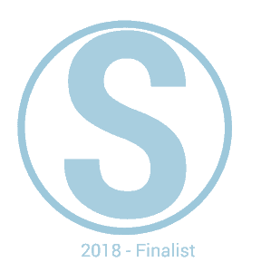
We have been lucky enough to be nominated for a lot of Sockies over the last few years. 2018 was no exception for Avalanche and we were finalists in four categories: Best Facebook, Best Instagram, Best Blog & Best Social Media.
eCommerce & Web Development All Star 2018-19
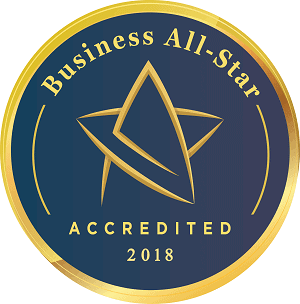
The Business All-Stars is an annual competition designed to identify, recognise and accredit Irish companies and individuals that have distinguished themselves in the conduct of their business over the last 12 months. Avalanche was accredited with the All-Star eCommerce & Web Development 2018-19 and are now included in the 2018-19 All-Stars Role of Honour. You can read more about it here.
Micro Business Awards 2018 | Male Entrepreneur of The Year
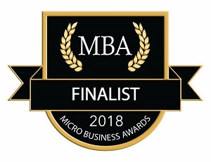
As a winner of the best young entrepreneur award last year (2017) at the Micro Business Awards, we are delighted to announce that we have been nominated for the main award this time around. The ceremony is being held in Limerick on April 14th, so we can't wait for the big night and hopefully going back to Kerry with a new award!
V by Very Irish Blog Awards 2017 | Best Corporate Blog | Best Blog Post

It was great to be shortlisted in 4 different categories at the V By very Irish Blog awards 2017. While it is a tough judging process, I am happy to say we were a finalist in two categories. Avalanche was nominated for the best corporate blog while my post on whether I want kids (which you can read here) was nominated for best overall blog post. While we didn't take home any awards on this occasion, it was great to see our blog being recognised by some very talented writers and hopefully we can be just as successful next year and even go one step further and you can read all about it here!
Dot IE Net Visionary Awards 2017 | Best Web Development Agency | Best Social Media Activity
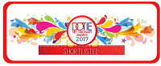
The Dot IE Net Visionary Awards are one of the most hotly contested awards for digital businesses in Ireland. In partnership with the IIA & IEDR, the awards recognise best practice across four main pillars of digital excellence: technology, entrepreneurship, marketing and innovation. The Dot IE Net Visionary Awards showcase the businesses & leaders that are driving innovation in the online world and serve as role models for others. We are nominated in the Best Social Media Activity which was a public vote so thank you to everyone who voted for us! Avalanche are also nominated in the Best Web Development Agency category. These are one of the most prestigious awards in Ireland, so it is a fantastic honour to be recognised by some incredibly talented people in the Irish digital community. Fingers crossed that we can bring some silverware back to Kerry on 15th September and you can read all about it here!
Social Media Awards (Sockies) 2017 | Use of Facebook by a Small Business | Best Use of Instagram | Best Blog of an SME | Best Use of Social Media by an SME
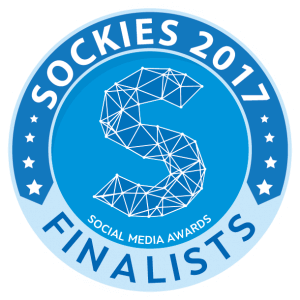
Sockies, which is short for the Social Media Awards are an annual celebration of the people who are killing it on social media in Ireland and guess who bagged a few nominations? Add this to the fact that the sun has been shining in Kerry, albeit in brief periods but we don't care, we just focus on good news at Avalanche! We are nominated for four awards at the 2017 Social Media Awards. We are up for something shiny in a few categories!
You can also check out the full nomination list and see who else is killing it at: http://sockies.ie/2017-nominations/ and you can read all about it here!
Micro Business Awards 2017 | B2B Category | Best Young Business Person | Most Creative Website
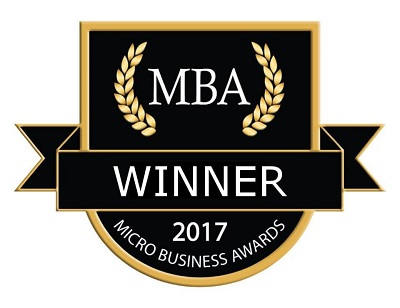
Happy Sunday evening! I just had a great weekend at the MBA's in Waterford as I was lucky enough to be named Best Young Business Person. It was a fantastic honour to receive such a wonderful award and I truly hope that I can live up to the title in the coming months/years. It was a great ceremony in Dungarvan and I want to say thank you to all the organisers, judges, nominees and to absolutely everybody who was involved in a great event. I have no doubt that next year will be even more of a success!
For anyone who has been following me on Instagram/Snapchat with a while, you will know the wait I have had to finally win an award and now that it's here, all I can think of is winning the next one, maybe it's the Kerry footballer mentality beat into me! I also need to think of something else to complain about but that's tomorrow's problem!
You can check out the MBA site for more information and we have blogged about the event & you can read all about it here!
Eir Spiders 2016 | Best In Blogging | Best Small Agency.
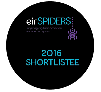
We are thrilled to be nominated for two awards at the Eir Spiders 2016. We are nominated in Best in Blogging and Best Small Agency. It is always an honor to be nominated and I would like to take a moment to congratulate all of my fellow nominees. It is a great recognition of our work on our blog as well as our design/development work.
As ever, we are delighted to be able to represent Kerry at such events and we will be suited and booted in anticipation of the awards!
You can view the full shortlist here and you can contact Eir for tickets if you wish for the event. The Queen of Ireland, Panti Bliss is hosting so it should be a great night for everyone!
Littlewoods Ireland Blog Awards | Digital & Technology | Lifesyle Categories.
We have been lucky enough to be nominated in the Littlewoods Ireland Blog Awards in two categories! We are nominated in the Digital & technology category as well as the Lifestyle category for our blog 25, "maturing" & still a cry-baby. We missed out on this occasion but we are happy to just know that our blog is being read by all you beautiful people!
Fashion & Lifestyle, Originality & Best Technology Blog | Irish Blog Awards.
We never get tired of being nominated for awards & are over the moon to be nominated 3 times at the Irish Blogger Association awards! We are nominated in the Fashion & Lifestyle, Originality & Best Technology Blog categories! We put a lot of work into our blog, we have over 5,000 readers every month & it features a lot of people who are more talented than me! Hopefully a blog award will be making its way to Kerry on April 30th!
Community Minded Business | B2B SME Growth | Best Under 30 | The SME Awards.

Another year of the SME Awards and we are happy to say we have been nominated in 3 categories for the SME awards. We have been nominated in the Under 30, B2B SME Growth and I am most proud to say we have been nominated in the Community Minded category for our work with various clubs/charities. 4 clients have also been nominated bringing our tally to 7! Thanks to all the judges! Congratulations to all my fellow SME's, you people are awesome and finding similar people online is a daily pick me up!
We made the finalist list in the B2B SME category, thrilled to be recognised next to so many incredible businesses!
Micro Business Awards 2016 | Young Person | Creative Website
A great way to kick off 2016! We have been shortlisted for two awards at the Micro Business Awards! We were nominated for the Young Person & Most Creative website categories. Feel humbled to be nominate so thank you to the judges & sponsors! It should make for an awesome evening so check it out!
Awwwards | Nomination.
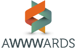
At the tail end of 2015 we nominated ourselves on the Awwwards website and have got ourselves a respectable little score on it. It is an awesome website where you can see some very cool work from designers all over the world. Check it out for some inspiration!
Agency of The Year | Most Beautiful Website | Web Awards.
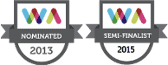 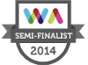
We have been nominated in the Web Awards for the last 2 years and are delighted to say we have been nominated again in 2015. There is a wide range of categories and we have been in the Agency of The Year category for the last two years. We have also had a lot of clients represented across the various categories and it is always a great event to meet likeminded people. It is also pretty casual, and everyone is super friendly so it is a nice change of pace.
Facebook Page of The Year | Social Media Awards. | Sockies | Best Facebook for Small Business
 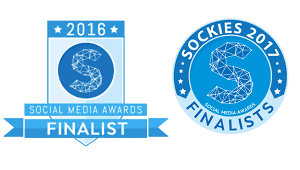
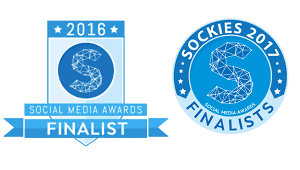
We were lucky enough to be nominated for the Best Facebook Page in Ireland in the Sockies in 2014. This was a massive honour for us as we put a lot of time into posting quality content that we find online/create that we think people will relate to. Our Facebook page is a mix of humour, competitions, work we have done and viral videos! We were up against Aer Lingus, Lidl, Done Deal and other big businesses so we were just happy to be held in the same esteem!
We have managed to make the cut in 2016 too (Forgot to enter in 2015, my bad!!). We got ourselves five nominations which you can view here and eventually ended up on the Finalist list for the Best Facebook for Small Business - In-house category. It is a huge compliment and we look forward to creating more content for Facebook!
Agency of The Year | Digital Rising Star | Eircom Spider Awards.

The big awards! We were nominated for Agency Of The Year in the Eircom Spiders in 2014 which was a great honour for Avalanche! The Eircom Spiders have been seen as the pinnacle for a long time and I am happy to say I was also nominated for the Digital Rising Star award becoming the youngest person to ever be nominated for it. This was a massive achievement for me personally and I look forward to hopefully getting my hands on an Eircom Spider in the future! Hopefully, 2016 can be our year for it!
Best Family Business | Best Startup | Best Under 30 | The SME Awards.
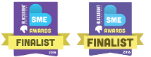
The first year of the SME Awards was held in 2015 and we are proud to say that Avalanche were nominated for three different awards! It is always exciting for SME's to be recognised by peers and to be nominated in three categories was fantastic. We were also finalists in 2016 (See above!) and hopefully taking one of those shiny new awards home with us! Congratulations to all my fellow SME's, you people are awesome and are a daily source of inspiration!